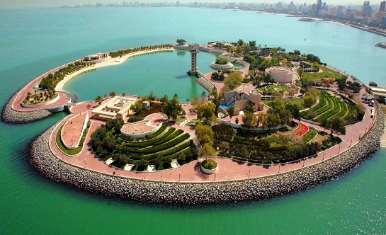
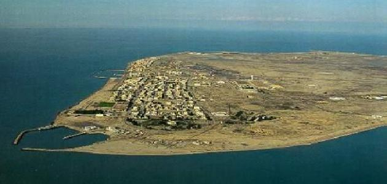
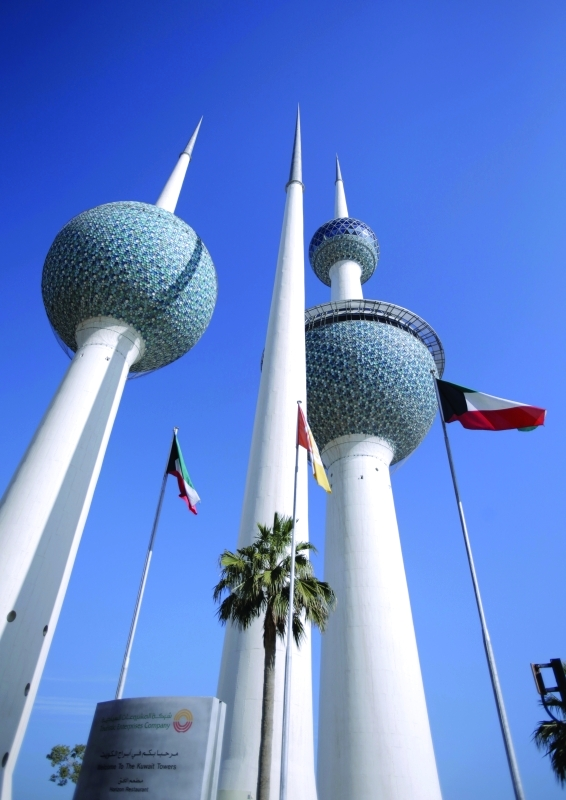
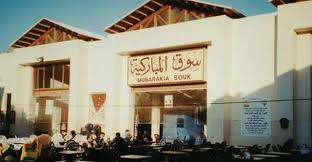

.jpg)

الجزيرة الخضراء

جزيرة فيلكا

أبراج الكويت

أغلب دول العالم تعتمد في اقتصادها على الأماكن السياحية لجذب الزائرين من خارج البلد اليوم سوف نتعرف على الأماكن السياحية في دولة الكويت
تعتبر أبراج الكويت من أهم معالم السياحة في الكويت العاصمة، وهي مقامةٌ على مساحةٍ من الأرض تمتد بلسانٍ داخل الخليج، وتتكون من ثلاثة أبراجٍ تحيطها تصميمات على شكل الكرة، خصص أحد الأبراج لتخزين المياه، وخصص الثاني لمعدات التشغيل بينما البرج الثالث من أجل الترفيه عن الزوار، حيث يوجد بها مطاعم ومقاهي وأماكن للتسلية والترفيه. ويبلغ ارتفاع أطول الأبراج حوالي 187 متراً، ويتميز مجسمه الكروي بأنه يدور حول محوره دورةً كاملةً كل نصف ساعةٍ، وبه المطعم الدوار، ما يتيح للسائح مشاهدةً بانوراميه لكل مناطق الكويت أثناء تناول الطعام أو من خلال المرصد الدوار، وقد انتشرت العديد من محلات الهدايا والتذكارات في مدخل الأبراج، وقد احيطت الأبراج بحديقة يستمتع فيها الصغار بالعديد من الألعاب المبهجة، وتعتبر مشاهدة الأبراج ليلاً بألوانها المتلألئة أحد أهم المعالم السياحية في الكويت.
أفتتح متحف الكويت الوطني في صورته النهائية عام 1983، وكان الغرض من إنشائه تجميع التراث الشعبي للكويت في مكانٍ واحدٍ، حيث تحرص الكويت على الحفاظ على هويتها وتعميق ذلك الشعور عند الأجيال الجديدة، وبعد ظهور عددٍ من الاكتشافات الأثرية بجزيرة فيلكا، فقد أضيفت لتلك المقتنيات قطعٌ أثريةٌ وعملاتٍ معدنيةً تعود للعصرين البرونزي واليوناني، وقد قامت بتلك الاكتشافات بعثةٌ دنماركية. وينقسم المتحف إلى ثلاثة أقسامٍ، القسم الأول عبارة عن قاعةً لعرض مقتنيات المتحف بتسلسلها التاريخي، وتنويهٍ وتعريفٍ بكل قطعةً فيه، كما يضم مكتبةً وقاعة سنيما وقاعة محاضرات، والقسم الثاني يعتبر مخزناً لصيانة وترميم مقتنيات المتحف، والقسم الثالث هو القبة السماوية، ويضم الدراسات والأبحاث والخرائط الفلكية، وهو مقصد دائم للباحثين والدارسين، وأحد معالم السياحة في الكويت.
تسعى الكويت لتطوير القطاع السياحي بالدولة لزيادة الإقبال على السياحة في الكويت، ومن أهم تلك الإنشاءات الجزيرة الخضراء وهي جزءٌ من المشروع العملاق الواجهة البحرية، الذي قامت بتطويره وتحديثه الشركة الكويتية للمشروعات السياحية. وقد تم افتتاح الجزيرة الخضراء عام 1988، على مساحة 785 م2، وهي عبارة عن جزيرة صناعية داخل الخليج، وتتصل باليايسة عن طريق ممر يبلغ طوله 134 متر. تتضمن الجزيرة الخضراء عدداً من المرافق السياحية المصممة بحيث تتلاءم مع طبيعة المنطقة، وبها بحيرةً صناعيهً تستمد مياهها من مياه الخليج، مستفيدةً من ظاهرة المد والجزر، إلى جانب عدداً من الملاعب والمتنزهات وملاهي الأطفال والمطاعم، وبها أيضاً مسرحا ًعلى الطراز الروماني يتسع إلى 700 متفرج.
تعتبر جزيرة فيلكا إحدى الجزر المنتشرة في الخليج العربي ومن أقدم معالم السياحة في الكويت، وقد كانت في السابق طريقاً لمرور التجارة بين الكويت والدول المجاورة، والجزيرة غنيةٌ بالعديد من الآثار التاريخية تعود لعصور عديدة، وأيضاً بها متحف الشيخ عبد الله السالم الذي يضم في مقتنياته العديد من المقتنيات التراثية الكويتية. ونظراً للأهمية التاريخية للجزيرة، ولموقعها الجغرافي العام، وتمتعها بسواحل وشواطئ رائعةً، فقد تقرر إقامة جسر بري يربطها بالعاصمة الكويت، كما تم إقامة العديد من الفلل والمرافق السياحية، والموتيلات لاستقبال الزوار من جميع أنحاء العالم، لزيارة الأماكن الأثرية وزيارة متحف التراث بها، والاستمتاع بممارسة العديد من الأنشطة الساحلية مثل الصيد وركوب الزوارق والسباحة.
ائماً ما يسعى السائح للبحث في الأصول والتاريخ، ويحن لاكتشاف الماضي، وسوق المباركية من هذه الأماكن الجاذبة للسائح الأجنبي، الذي ينبهر بسحر الماضي، فهذا السوق عمره فوق 200 عاماً، وقبل ظهور النفط، وما زال يحتفظ بطابعه القديم، ويعرض المنتجات القديمة الأصيلة مثل أنواع التمور المختلفة والحلويات الشعبية، وبه أماكن لمحلات الصاغة والمجوهرات، وخصوصاً اللؤلؤ المستخرج من الخليج. كثيراً ما يجد عشاق السجاد الفارسي ضالتهم في هذا المكان، حيث يجدون أيضا التوابل والعطور والملابس ذات الطابع الشعبي، كما أنه يقدم من خلال المطاعم المنتشرة فيه الأكلات الشعبية التي يقبل السائح على تجربتها وتذوقها، وهكذا اكتسب سوق المباركية شهرةً عالميةً وأحد علامات السياحة في الكويت.